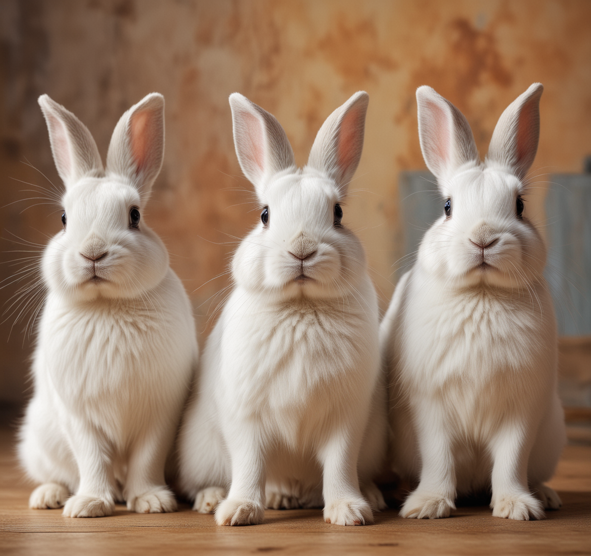
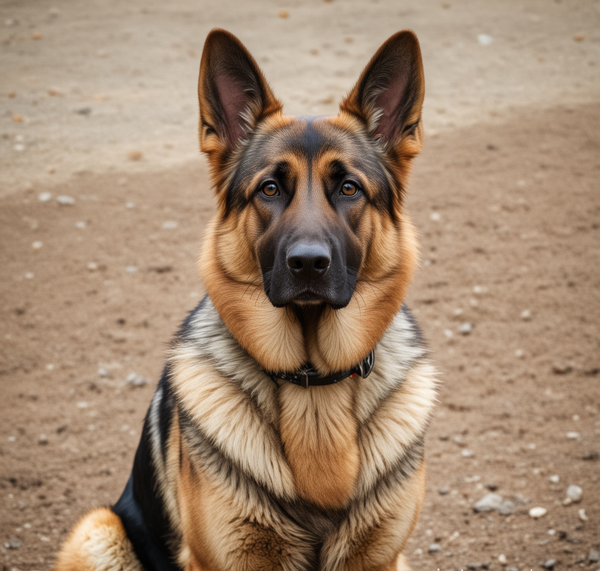
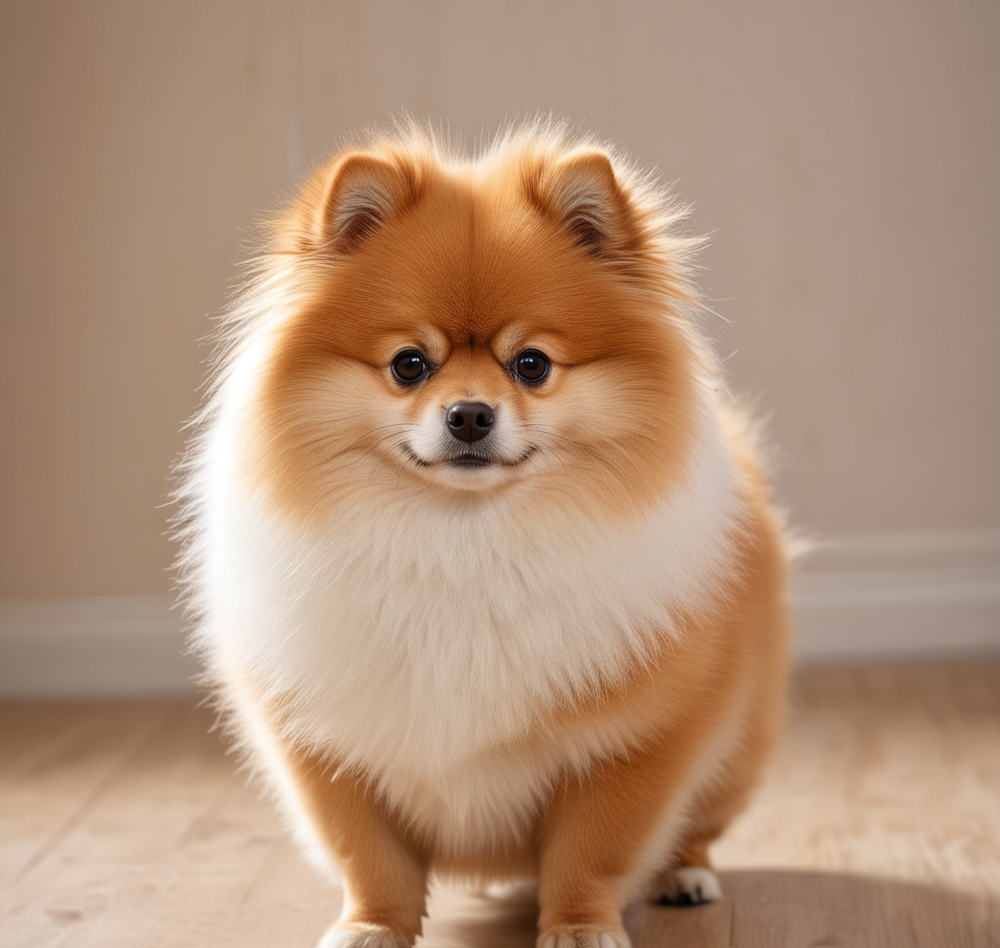
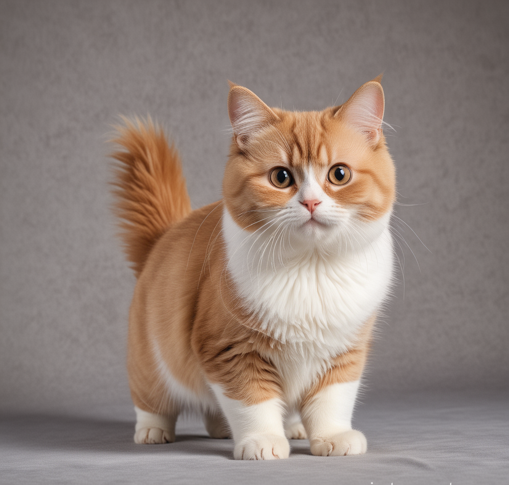
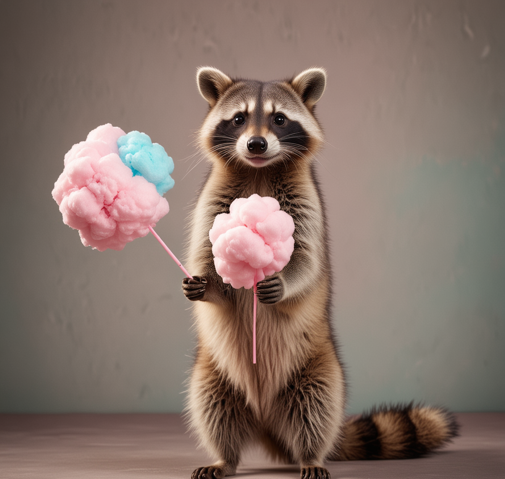

Биба, Боба и Толя
2023
Кролик
Три родных брата. Все делают вместе: спят, едят, гуляют и даже фоткаются. Любят морковку и семочки подсолнуха. Шерсть у каждого мягкая и нежная.

Зоро
2022
Немецкая овчарка
Бывший полицейский. Самый дисципленированный пес. Всегда слушает команды и выполняет приказы. Является примером для остальных. Помогает следить за порядком и маленькими животными.

Дори
2022
Доберман
Является ненастоящей, но все же мамой для маленьких жителей приюта. Она следит за всеми, кормит, играется. Так же является одной из старшей в приюте.

Санни
2023
Манчкин
Один из малышей приюта. Пока что он азарной и любит гулятся. Часто попадает в передряги. Любит лазить на высокие объекты, но слезть уже не может.

Ешка
2022
Енот
Единственный енот в нашем приюте. Ему сложно найти общий язык с другими животными, но он старается. Любит сладкую вату и фоткаться.